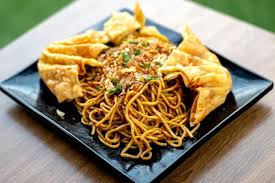
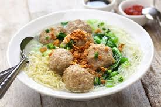
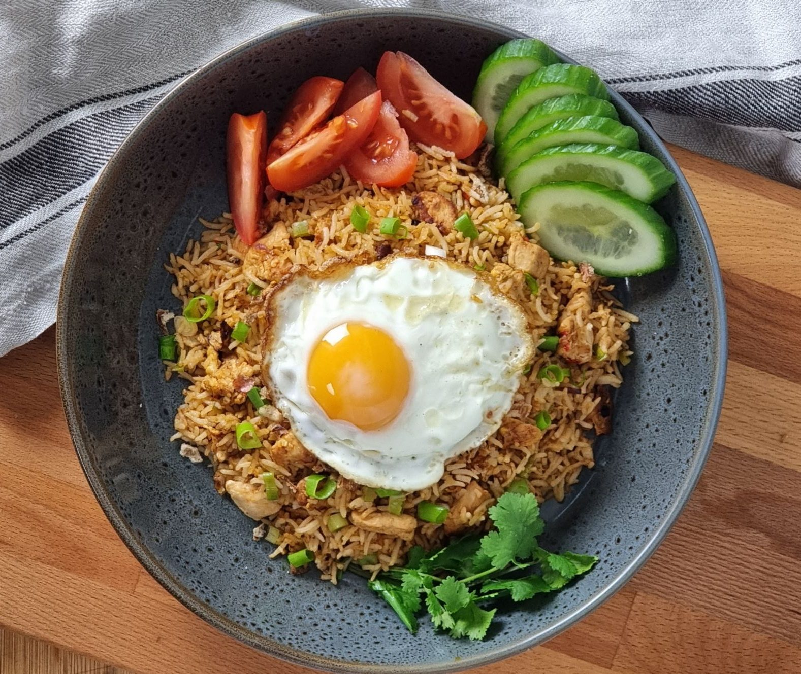

Selamat Datang di Toko Makanan Online Kami!
Temukan berbagai macam makanan lezat dengan harga terjangkau.
Menu

seblak
Seblak adalah makanan Indonesia yang dikenal berasal dari Bandung, Jawa Barat dengan cita rasa gurih dan pedas.
Rp 25.000

Mie Gacoan
Mie Gacoan adalah restoran dengan menu utama mie yang sedang hit di Tuban di Jawa Timur.
Rp 30.000

Bakso
Bakso adalah produk pangan yang terbuat dari bahan utama daging yang dilumatkan, dicampur dengan bahan lain, dibentuk bulatan, dan selanjutnya direbus
Rp 20.000

nasi goreng
nasi goreng adalah produk pangan yang terbuat dari bahan utama daging dan nasi yang dilumatkan, dicampur dengan bahan lain, digoreng , dan disajikan di piring
Rp 20.000